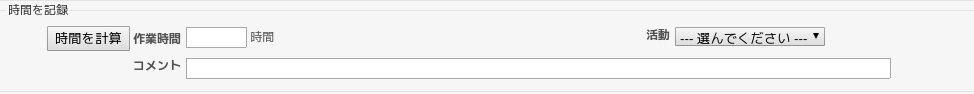

Redmine Advent Calendar 2020 10日目の記事です。
#ssmjp Advent Calendar 2020 で、 Redmine Japan 2020 にて発表した 「チケット駆動開発がまわりはじめるまでの取り組み」で、 お話できなかった内容を少しずつテキスト化しています。 今のところ、チケット駆動開発との出会い、なぜそのマインドセットに至っているのか、 いまの自分がチケット駆動開発に対して考えていること、 チケット駆動開発の導入をどう考えたのか、 なぜチケット駆動開発を導入しようと思ったのか、 などが書き出せています。よかったら眺めてみてください。
毎日、3000字ほど書くということを課されている状態でなかなか大変です。 途中、予定通りにコンテンツを追加できないことがあるかもしれませんが、 できるだけ食らい付いていきたいと思っています。
今日は、「チケット駆動開発がまわりはじめるまでの取り組み」 を運用していく中で開発した小さなツール達を Redmine Advent Calendar 2020 の場を借りて紹介していきます。
私の整備した HashiCorp Nomad で作るコンテナ実行基盤 の上で動いているものがほとんどです。
project-redmine-backup
Redmine のデータベースは PostgreSQL を使っています。 バックアップは大事です。 pg_dump コマンドを使いデータベースをバックアップし、 Rclone を使い某クラウドストレージにバックアップを転送するシェルスクリプトになっています。
Rclone を使うとクラウドストレージの API と格闘したり、 API を操作するための処理を書いたりせずに、 コマンドラインで気軽にクラウドストレージにデータを転送できたり、 ファイルを何世代残すのかをコマンドラインオプションだけで制御できたりして、 クラウドストレージへの操作がとても楽です。
とても便利に使わせてもらっているので、 PayPal 経由で寄付 しようとしたのですが、エラーが出て寄付できませんでした。 誰か、寄付の方法を知っていたら教えて欲しいです。
シェルスクリプトは Docker でコンテナ化され、 Nomad にバッチスケジューラとして登録されており、 Nomad の管理下で1時間おきに Docker コンテナが起動しています。
project-sandbox-restore
特定のプロジェクトにおいて Redmine API を使いチケットを作りたいという要望がチームメンバーから上がりました。 本番稼動している Redmine 環境にてテストしてもらうわけにはいかないので、 サンドボックス環境を用意し、そこで「自由にテストしてね」というようにしています。
サンドボックス環境では、バックアップしているデータベースを使ってカジュアルにリストアできるようにしています。 うっかり本番環境のデータベースをバックアップと入れ替えてしまわないように、 サンドボックス環境でしか動かないリストア用のコマンドを開発し提供しています。 十数行の小さなシェルスクリプトです。 サンドボックス環境のリストアは、このコマンド経由で実行してもらっています。
redmine2slack
現職では Slack がコミュニケーションの基盤になっています。 Redmine での活動を演出するため、 Slack に専用のチャンネルを用意し、 Redmine の「活動」の Atom を Slack に通知する仕組みを作りました。
アプリケーションは Python で書き、 Docker でコンテナ化されています。
Nomad にバッチスケジューラとして登録されており、 Nomad の管理下で15分おきに Docker コンテナが起動しています。
redmine-today-activity
現在は、 Redmine での活動を一覧しながら日次のミーティングを行っています。 アプリケーションを開発しなくても Redmine のカスタムクエリを使えば一覧できるのではないかと思われるかもしれません。 複数のプロジェクトにまたがったカスタムクエリを Redmine に登録しているユーザーに公開できなかったり、 私が管理者をしている Redmine 以外にもチームメンバーが起票する Redmine が存在しており、 それらを全て集計しなければチームメンバーの活動が見えないという状況でした。
チームメンバーが利用している Redmine を洗い出し、 一つの画面で当日の動きが一覧できる Web アプリケーションを開発しました。
アプリケーションは Python + Flask で書き、 Gunicorn 経由で起動するようになっており、 Docker でコンテナ化しています。
Nomad にサービススケジューラとして登録されており、 Nomad の管理下で Docker コンテナが起動し、 Traefik 経由で、 アプリケーションに接続する構成となっています。
project-escala-activiety
チームに来た問い合せ、アラート対応などを行うためのプロジェクトを用意し運用しています。 アラート対応は、復旧対応までとしており、恒久対応がある場合は別プロジェクトにて管理します。 問い合せも回答までに数週間掛かるようなものはほとんどありません。 このプロジェクトに作られたチケットがクローズされるまでの期間は短かいです。
よくチケットが放置されており、治安が良くないなと思ったと同時に、 これを誰かが警察し続けるのは、その人の頑張りに依存してしまうので、 チームメンバーにチケットを放置しないことを意識してもらう方向に舵を切りたいなと考えました。
最後のチケットの更新日から7日間経過しているクローズしていないチケットを Slack にメンション付きで通知することにしました。 日次のミーティングにてチームメンバーにメンションされたら、 チケットの状況を確認してステータスの変更またはコメントを追記してくださいと伝え合意を得ました。
アプリケーションは Python で書き、 Docker でコンテナ化されています。
Nomad にバッチスケジューラとして登録されており、 Nomad の管理下で毎日、始業時間に Docker コンテナが起動し、 該当するチケットを洗い出し、担当者に Slack でメンションしています。
仕組みを入れただけですぐに状況が改善されたりはしません。 同じチケットが毎日メンションされ続けていることに対して、 切り込んでいかなければならない状況となっています。
「時間を計算」ボタン
時間を付けていきましょうとチームで認識は合わせましたが、 それで時間が付きはじめるとは思っていません。 実際に時間を集計してみてもチームメンバーの半分は時間が付いていない状態でした。 認識は合わせたが、どのような心境であるかをヒアリングしたところ、 「時間の入力が手間で、時間を入力するコストを下げたい」というようなコメントが上がってきました。
Redmine Plugin をゴリゴリ書きはじめるのはコスト高いなと思ったので、 Redmine view customize plugin を使い、 JavaScript で時間を計算して自動で項目を埋めるボタンを作りました。 JavaScript とか jQuery とか全然使わないので、数十行書くのに4時間くらい掛かってしまいました。
( Redmine view customize plugin とても便利に使わせてもらっています。開発者の方ありがとうございます。 )
最後にチケットを更新した日時を取得し、 現在時刻との時間差を計算し作業時間を埋めるという「時間を計算」ボタンを JavaScript にて実装しました。 最後にチケットを更新した日時を無制限に許容すると、 とんでもない時間が付いてしまう可能性があるため、 最後の更新から2時間以上経過している場合は、 自動では入力せず「手動で入力してね」というメッセージを出すようにしています。

これで時間を付けるメンバーが 2/3 に増えました。 仕組みを入れただけで状況が改善するとは思っていません。 残りの 1/3 に対して、どうアプローチしていくかが、 今後、取り組んでいく課題として残っています。
redmine-time-entries
前職にて「このチケット何時間が掛かっているけど説明に書いてあるゴールとしては、 こんなに掛からなそうに感じるのだけれど自分の中でどう考えていますか」 と上長やチームメンバーから聞かれ、 自分のゴールがぶれていたり、脇道の逸れていたということに気付かされることが何度もありました。
これらの経験から時間という記録を付けることが、 感覚ではなく定量的に議論するきっかけとなるということを学びました。
現職でも、チケットに時間を付けていきましょうという取り組みを少しずつ進めています。 「時間を付けていきましょう」という認識を合わせただけで時間が付くようになっていくとは、微塵も思っていません。 何時間付いているではなく、 毎日コンスタントに時間が記録されているかという観点で「ふりかえり」を実施していきたいと考えました。 Redmine で作業時間を集計すると、チケットごとの時間が表示されます。
こういった情報は「ふりかえり」では必要ないので、時間を除去した一覧が欲しいなと思い、 Rest_TimeEntries を使って、 自分が欲しいと考えた情報だけを一覧する Web アプリケーションを開発しました。
アプリケーションは Python + Flask で書き、 Gunicorn 経由で起動するようになっており、 Docker でコンテナ化しています。
Nomad にサービススケジューラとして登録されており、 Nomad の管理下で Docker コンテナが起動し、 Traefik 経由で、 アプリケーションに接続する構成となっています。
まだ「ふりかえり」をどう運用していこうかというところまでしかきていません。 「エスカレーション対応の稼動が7割になっているから4割まで減らせるような取り組みを一緒に考えて試行していこう」とか、 業務掛け持ちの人には「このチームでの稼動はこれくらいなので週のアウトプットとしてはこのくらいで調整していこう」という定量的なコミュニケーションに発展させていけたらと考えてます。
redmine-police-officer
親子でチケットを管理しているプロジェクトもあります。 あと一つ子チケットが残った状態で放置されている状態で放置されている親チケット、 子チケットが全てクローズとなっているがクローズとなっていない親チケットなど 気になるチケットをいろいろ見掛けました。
これも人間が警察として頑張ると、その人の頑張りに依存してしまいます。 気になったチケット構成を全てコード化し、洗い出せるようにし、 Slack にメンションする仕組みを開発しました。
アプリケーションは Python で書きました。 Docker でコンテナ化し、 Nomad にバッチスケジューラとして登録し、 Nomad の管理下で、日次で Docker コンテナが起動し、 Slack にメンションする構成を考えています。
プログラムは書かれた通りに動くので、忖度などは一切ありません。 私が作者だからといって、私に対してだけは警察しないということはなく、 容赦なく私に対しても警察してきます。 私が開発したのに、私より賢く動いてくれるものが出来上がりました。
チームメンバーに共有し、実際に運用しながら調整していこうと考えています。